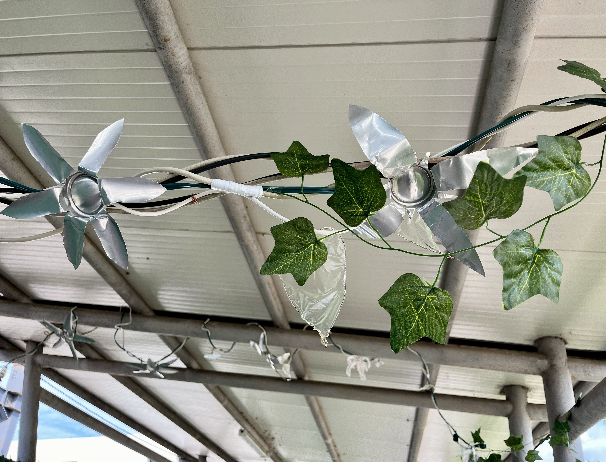
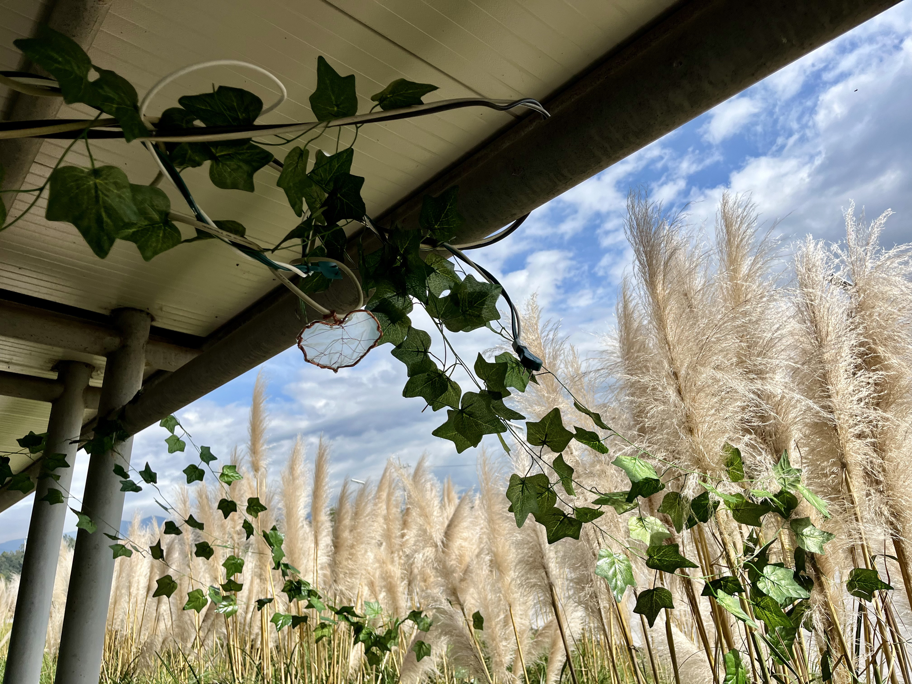
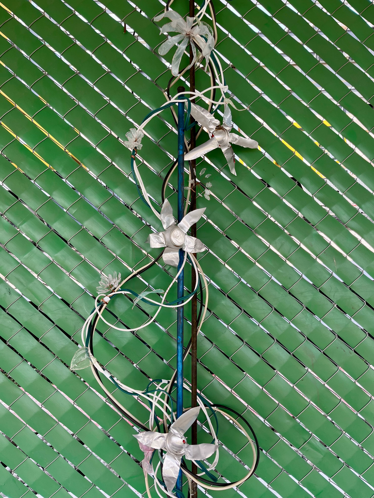
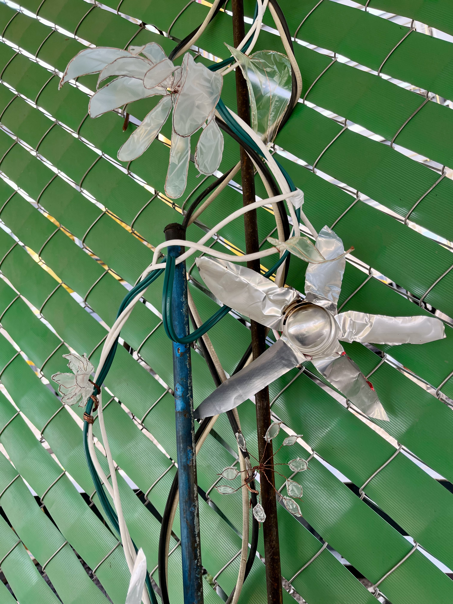
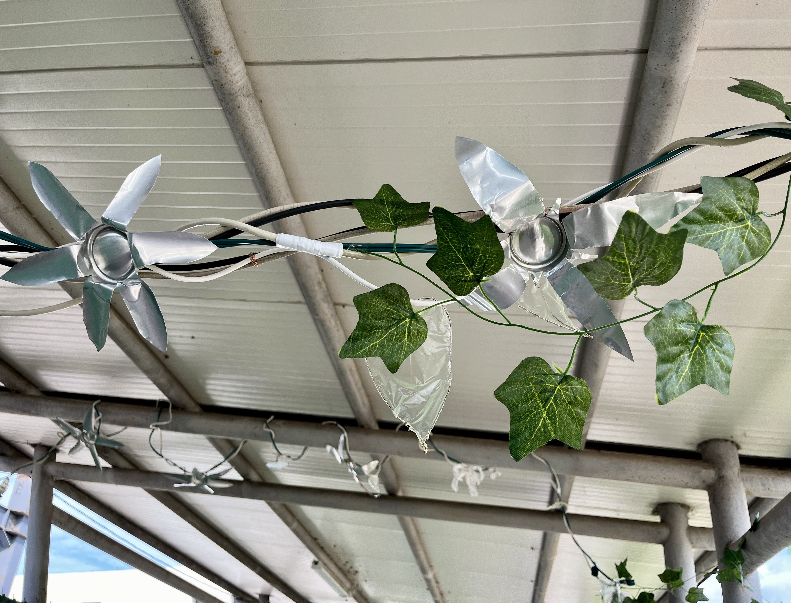
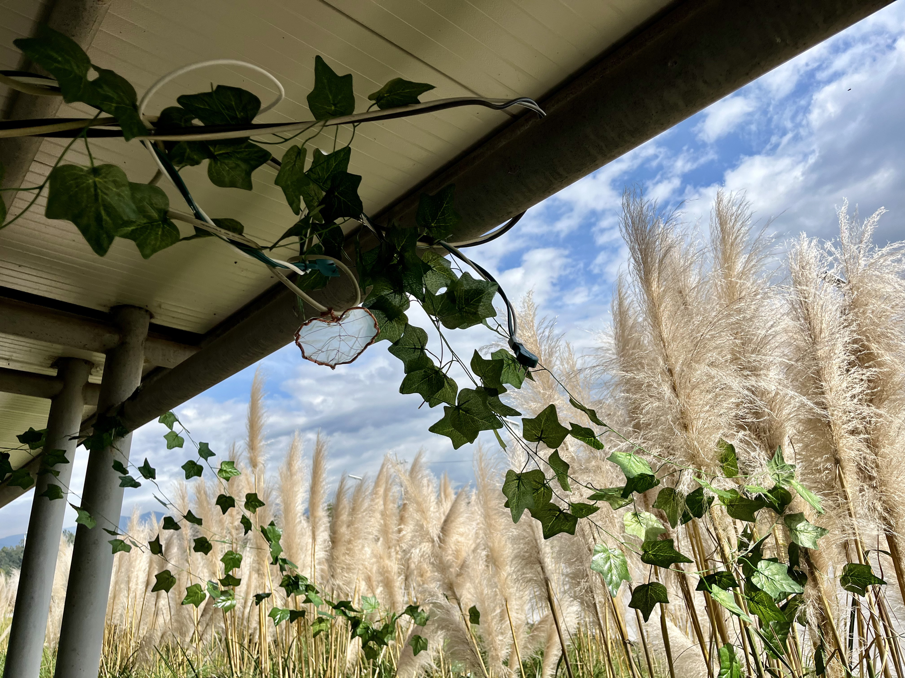
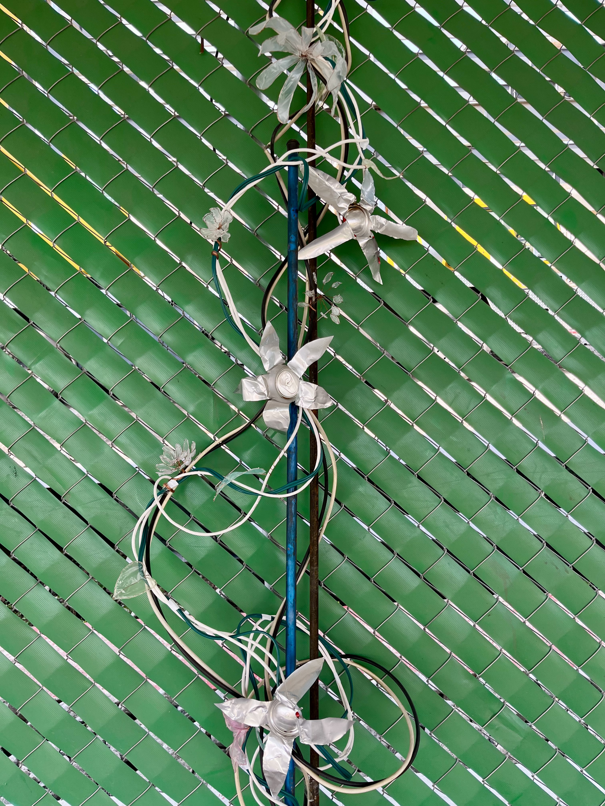
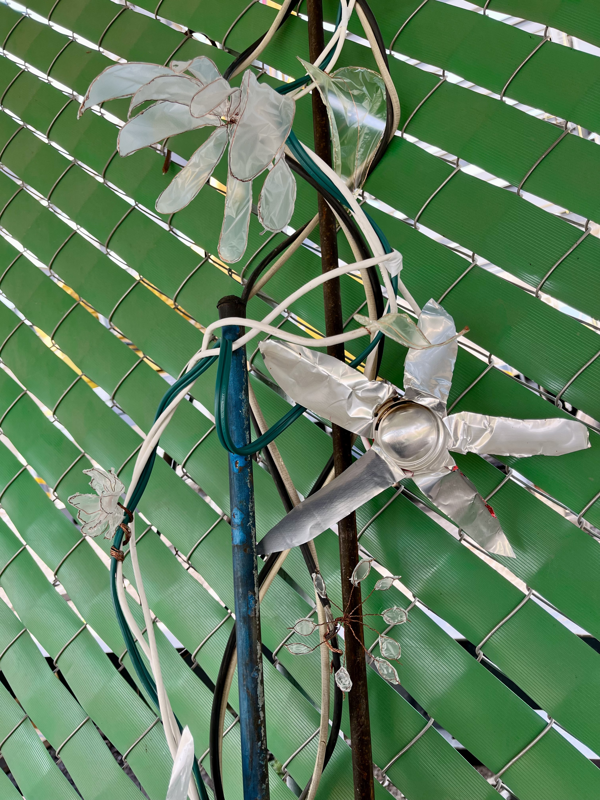

Sobre mí

Paola es una artista en formación, cuyos intereses de expresión rondan entre la fotografía y poesía. En los dos años que ha cursado en la Licenciatura en Arte y Comunicación digitales, se ha centrado en la creación colaborativa de proyectos multidisciplinarios que abarcan desde video hasta instalaciones interactivas.
Naturaleza Extendida
Naturaleza extendida es uno de los proyectos más recientes en los que Paola ha colaborado. Dicha obra tiene como objetivo transmitir que tanto el desarrollo urbano como la conservación de los humedales son esenciales para el crecimiento y equilibrio de la sociedad, destacando la necesidad de armonizar ambos aspectos. Se trata de un proyecto en el que conviven dos elementos centrales: una enredadera de cable, alambre y plástico, así como un sistema sonoro. La enredadera con su diseño fluido y orgánico imita la elegancia natural de la vegetación y crea un contraste visual entre el entorno urbano y el ecosistema natural; los cables, tanto oxidados como de cobre, fueron moldeados en formas lisas o rizadas para replicar las formas vegetales que se enredaron alrededor de varillas de construcción imitando especies de plantas trepadoras que habitan los humedales. A su vez, estas estructuras fueron “sembradas” dentro de macetas de metal e instaladas en la malla verde del andador de tal forma que las plantas subieron hacia el techo, cruzaron el pasillo por arriba y finalmente establecen una conexión física y simbólica entre la zona en construcción y las plantas conservadas en el lado opuesto.
 








Otros proyectos
Unna
Incubus